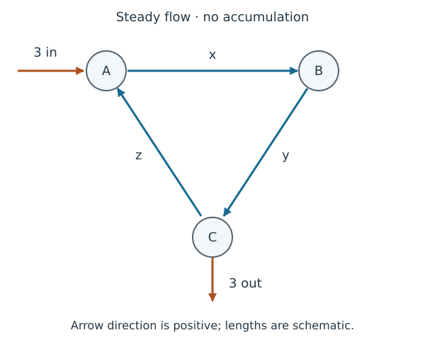

再看流量守恒：秩与四个基本子空间（选读）
Flow Conservation Revisited: Rank and the Four Fundamental Subspaces (Optional)
从一个解集到一般问题 From One Solution Set to a General Question
第一部分流量例研究 A→B→C→A 的三条内部通道，外部净注入为 ，得到
全部代数解允许 ；原题要求实际流量沿固定箭头方向且非负，因此物理解还需 。现在进一步问：任意外部净注入何时可以实现？为什么有一个自由度？四个基本子空间分别描述什么？
先修为秩与秩分解、四个基本子空间及相容性。这是课程自编例子的递进，不增加容量、压力或阻力规律。
支路流量与节点净注入 Branch Flows and Net Injections at Nodes
内部流量依次为 ，令 。令 为 A、B、C 三节点的外部净注入（net injection）：正值为净注入，负值为净流出。各量使用同一种流量单位，例如 L/s。

每个节点无积累时，“内部净流出量=外部净注入量”，于是
每行对应一个节点方程。每列对应一条支路：在出发节点记 ，在到达节点记 ，表示该支路对两端节点内部净流出的贡献。 无量纲，等式两边都是流量。
的坐标标记支路流量，方程右端目标向量 的坐标标记节点净注入。即使维数相同，它们也不是同一种物理对象。
相容条件与全部解 Consistency and All Solutions
三行之和为零，所以三个方程相加给出必要条件
它也充分。由第一式 ，第二式 。取 ，当上述条件成立时，
回代前三式，左侧依次为 。反过来，每个解取 都必须有这个形式，因此这是全部实数代数解。参数项是环流（circulation）：三条支路同增同减，任何节点平衡都不变。
若仍要求实际流量沿三条规定方向且非负，须进一步满足 、、；原目标恰好化为 。代数参数范围与模型允许的参数范围应分开。
四个空间，各自描述什么？ What Do the Four Spaces Describe?
前两行独立：它们的线性组合为零时，从第三分量得第一系数为零，再从第二分量得第二系数为零。第三行是前两行之和的负数，因此 。结合行列秩相等和教材§2.9定理14，两个零空间的维数均为 。
| 空间 / Space | 基与维数 / Basis and Dimension | 坐标对象与意义 / Coordinates and Meaning |
|---|---|---|
| ；维数2 | 节点净注入空间中的平面 ；可由内部流量实现的目标 | |
| ；维数1 | 支路流量空间中的环流；不改变节点平衡 | |
| ；维数2 | 支路变量上的约束系数空间；各行组合能给出的约束系数 | |
| ；维数1 | 节点方程的组合系数空间；使各行的线性组合等于零 |
表中行空间的基把行转为列记号，按行空间约定在 中比较。行空间不是所有允许流量的集合：一行是对 施加约束所用的三个系数。
这些基可以直接核对。 的前两列独立，第三列是它们之和的负数；任意总和为零的 都有
所以这两列确实张成所述平面。齐次方程给出 ，说明右零空间恰是环流直线。前两行独立并张成全部行，给出行空间基。最后，设 的分量为节点方程的组合系数；由 得 ，给出左零空间基。
于是左零空间相容性判据在这里变成 ，也就是已经双向证明的总净注入为零。
本例节点和支路恰好各有三个，某些空间有相同坐标表达，但对象仍不同：右零空间描述支路环流，左零空间描述节点方程之间的关系。一般 矩阵的列空间在 ，行空间在 ；不能从这个特例断言两者总是同一空间。
练习：目标、环流与新增测量 Exercises: Targets, Circulation, and an Additional Measurement
- 能否实现？求全部代数解并解释自由参数。若按原固定流向筛选，参数还需满足什么条件？
- 为什么不能有稳态解？分别用行依赖和列空间说明。
- 回看原目标 下的测量 。不用从头消元，解释新增约束怎样改变矩阵尺寸、秩、零空间及唯一性；任意四个观测值都相容吗？
提示 / Hint
先检查三个目标分量之和，再使用一般解。测量 给系数矩阵增加一行 ；检查它是否消除了原齐次方向，而不是给原矩阵增加一个未知量。
完整反馈 / Full Feedback
- 总和为零，所以可实现。全部解为
回代得 。变化的 只添加环流；按原固定流向需 ，即 。
三方程相加将给出 ，与三行之和为零矛盾。等价地，这个目标不在 的平面内，所以不存在稳态流量解。
新系数矩阵及目标为
原来的齐次解为 ；新齐次方程又要求第一分量为零，因此 。于是 ，秩从2增至3。它是 满列秩矩形矩阵，对相容数据解唯一。本组数据对应 ，符合非负条件。
一般四个目标分量仍须使前三个之和为零；例如只把原净流出改成 ，新增测量也不能消除矛盾。满列秩不保证任意目标可达， 也没有普通双侧逆矩阵。
与电流守恒的联系 Connection to Current Conservation
在节点不积累电荷的稳态电路中，规定支路电流正方向后，基尔霍夫电流定律（Kirchhoff’s current law, KCL）也给出同类节点平衡方程。与这里固定实际流向的非负流量不同，电流的负值通常表示实际方向与参考方向相反，不应机械排除。
仅有节点电流守恒仍可能留下环流自由度；完整电路还要结合电压关系、欧姆定律等元件规律，不能由这个守恒模型断言完整电路的电流不唯一。MIT OCW 的节点法与回路法讲义展示了守恒方程与元件关系怎样配合。本页只建立这一联系，不展开完整电路求解。
从泡利矩阵的次序问题，到两绳的逆映射与物理可行性，再到本页的空间结构，三篇选读分别使用运算、可逆性和四空间解释具体问题。可回到第二部分综合复习对照这些数学联系。